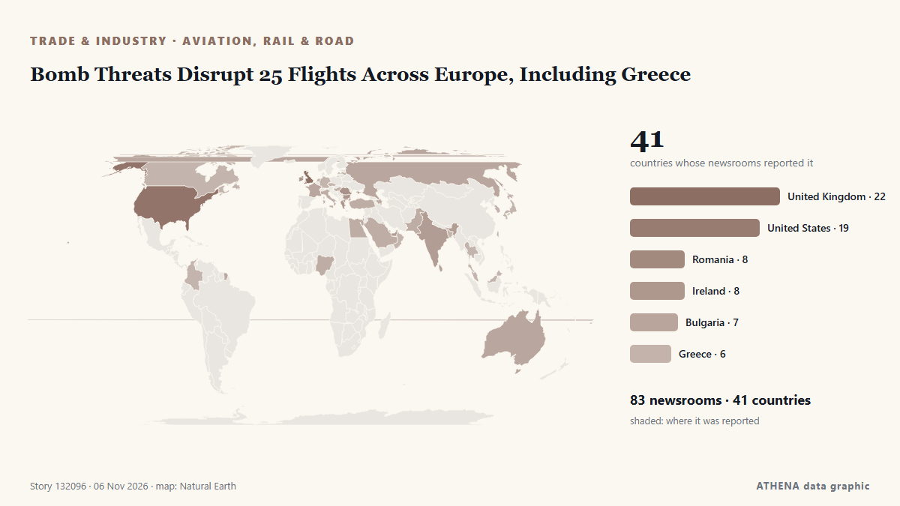

Bomb Threats Disrupt 25 Flights Across Europe, Including Greece

Anonymous tip-off about explosives on Ryanair planes from Lisbon and Dublin prompted fighter jet escort; similar false alerts reported across Europe on Tuesday. de Wanted in Rome (working feed)
Informado de forma independiente por 85 medios de 42 países desde el 3 nov; el primero fue Romania Insider; la cobertura sigue extendiéndose. ATHENA califica el riesgo como elevado (4.3/10), sobre todo por la gravedad del daño descrito y su alcance geográfico y sectorial. La confianza es del 90 % (alta): lo corroboran 85 medios independientes, con una fiabilidad media de las fuentes del 73 %. Medios por país: Estados Unidos (8), Rumanía (6), Reino Unido (5). Cobertura: del 3 nov al 4 nov, 33 horas.
Por qué importa: Las perturbaciones en el comercio, la industria o las infraestructuras recorren las cadenas de suministro y cambian costes y plazos lejos de su origen.
Qué ha cambiado: 92 informaciones nuevas de 68 redacciones en las 24 horas hasta el 6 nov.
Primer titular: Romania’s airline Dan Air loses payment operator after insolvency request
Los titulares se muestran en inglés, tal como se publicaron.
De un vistazo
Seleccionado, puntuado y redactado por la metodología publicada de ATHENA. Ningún editor interviene en eventos concretos. Cómo se elabora ›
| 03 Nov 13:12 UTC | 2 |
|---|---|
| 03 Nov 16:12 UTC | 1 |
| 03 Nov 19:12 UTC | 4 |
| 03 Nov 22:12 UTC | 3 |
| 04 Nov 01:12 UTC | 6 |
| 04 Nov 04:12 UTC | 4 |
| 04 Nov 07:12 UTC | 6 |
| 04 Nov 10:12 UTC | 6 |
| 04 Nov 13:12 UTC | 6 |
| 04 Nov 16:12 UTC | 0 |
| 04 Nov 19:12 UTC | 2 |
| 04 Nov 22:12 UTC | 2 |
| 05 Nov 01:12 UTC | 2 |
| 05 Nov 04:12 UTC | 1 |
| 05 Nov 07:12 UTC | 6 |
| 05 Nov 10:12 UTC | 31 |
| 05 Nov 13:12 UTC | 22 |
| 05 Nov 16:12 UTC | 14 |
| 05 Nov 19:12 UTC | 7 |
| 05 Nov 22:12 UTC | 8 |
| 06 Nov 01:12 UTC | 1 |
| 05 Nov 14:06 UTC | 3.0 |
|---|---|
| 06 Nov 00:04 UTC | 4.4 |
| 06 Nov 01:20 UTC | 4.3 |
Por qué estas cifras
Importancia
Riesgo
Confianza
La cobertura: quién informó y cuándo
titular tal como se publicó · abre el original- Romania Insider · RumaníaUS Under Secretary of Defense for Policy to meet president Dan in Bucharest on November 4
- Wanted in Rome (working feed) · ItaliaHoax bomb threats hit flights at Rome’s Fiumicino airport
- Business Review (Romania) · RumaníaBellemonde opens the first Ready to Move In showroom in northern Bucharest
- Simple Flying · Estados UnidosAir Canada Cancels All Flights To This Long-Haul Destination: See Map Now
- Evening Standard (London) · Reino UnidoTwo Ryanair flights from Dublin searched after potential bomb threats
- Belfast Telegraph · Reino UnidoTwo Ryanair flights from Dublin searched after potential bomb threats
- PBS NewsHour · Estados UnidosFlights across Europe face disruption after false bomb threats
- FBC News · FiyiBomb threats on flights, cruise ship cause disruption in Europe, no devices found
- Al Jazeera English · CatarBomb threats disrupt flights across Europe, no explosive devices found
- Punch · NigeriaSenate debates national carrier, demands equal China flight rights
- The Island · Sri LankaSeven flights across Europe targeted by suspected bomb threats
- Business Recorder · PakistánBomb threats disrupt Europe flights
- Al Jazeera English · CatarSeven flights across Europe targeted by suspected bomb threats
- Nikkei Asia · JapónTaiwan airlines continue flights over Russia, rattling Europeans
- Trinidad Express · Trinidad y TobagoBid to ease airport anxiety
- The National Herald · Estados UnidosFlights across Europe Searched and Diverted after Hoax Bomb Threats
- ABC News Australia · AustraliaChina Southern Airlines suspends direct Darwin to China route after one year
- Daily Mirror · Sri LankaSeven flights across Europe targeted by suspected bomb threats
- Gulf News · Emiratos Árabes UnidosEmirates Dubai-US flights: New mandatory attestation form from November 4
- WalesOnline · Reino UnidoGovernment update on Ryanair bomb threat that grounded seven flights
- Daily Mirror · Sri LankaThree Indian passengers arrested over unruly behaviour on Sydney-Katunayake flight
- Romania Insider · RumaníaRomania’s airline Dan Air loses payment operator after insolvency request
- Birmingham Mail · Reino UnidoBirmingham Airport to Delhi flight axed in 'real loss' for Indian community
- Arab Times · KuwaitFlights across Europe searched and diverted after hoax bomb threats
- Baltic News Network · LetoniaBomb threats disrupt flights across Europe
- Business Traveller · Reino UnidoSWISS Bengaluru Flights Take Off With Nonstop Zurich Link
- Business Review (Romania) · RumaníaRomania’s purchasing power is barely half the European average, while Bucharest exceeds it
- Arabian Business · Emiratos Árabes UnidosEmirates imposes new US flight forms effective immediately
- BTA (English) · BulgariaBTA Bucharest Correspondent Martina Gancheva Receives Romanian Association of Journalists and Tourism Writers Award of Excellence
- Romania Insider · RumaníaRomania slips one place in European purchasing power ranking, Bucharest scores twice the national average
- Egypt Independent · EgiptoBomb threats on board 7 flights across Europe cause disruptions
- The War Zone · Estados UnidosUSAF Widens Lower-Cost Cruise Missile Effort To Also Include Glide Bombs
- NDTV · IndiaForeign Airlines Back Moving Some Mumbai Flights To Navi Mumbai Airport
- Business Review (Romania) · RumaníaPrimark confirms November opening dates for new stores in Bacău and Bucharest
- FreightWaves · Estados UnidosEast Midlands Airport welcomes another Chinese cargo airline
- Breaking Defense · Estados UnidosUK airshow RIAT permanently relocates from Fairford
- Indian Express · IndiaMumbai airport wants all flights to 14 overseas destinations to move to Navi Mumbai, writes to government
- FreightWaves · Estados UnidosEmirates rolls out enhanced air cargo service for data center operators
- Simple Flying · Estados UnidosHow Much Premium Economy Costs On London-New York Flights In 2026
- Greek City Times · GreciaGreece Sees Stronger Travel Demand and More Flights